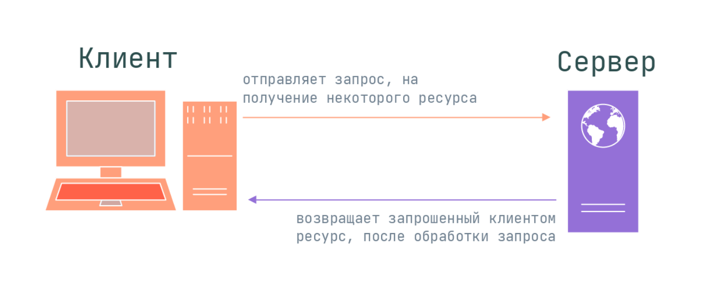
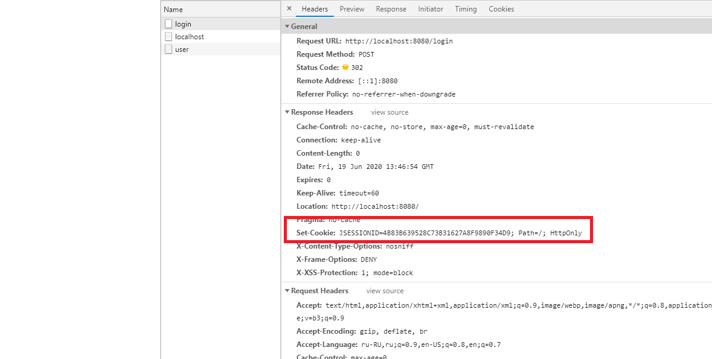
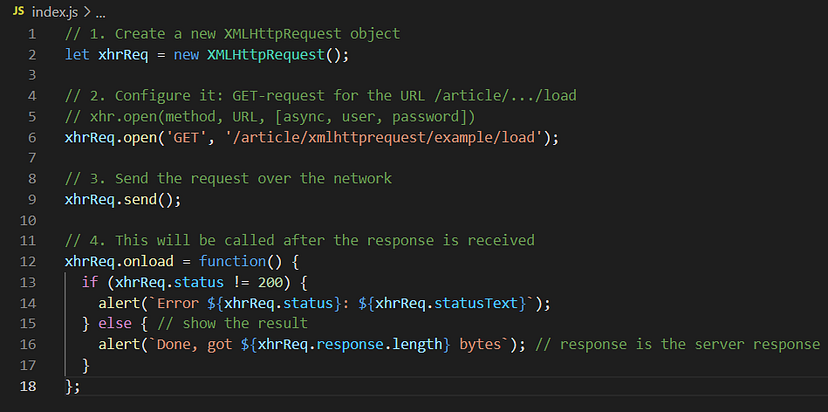
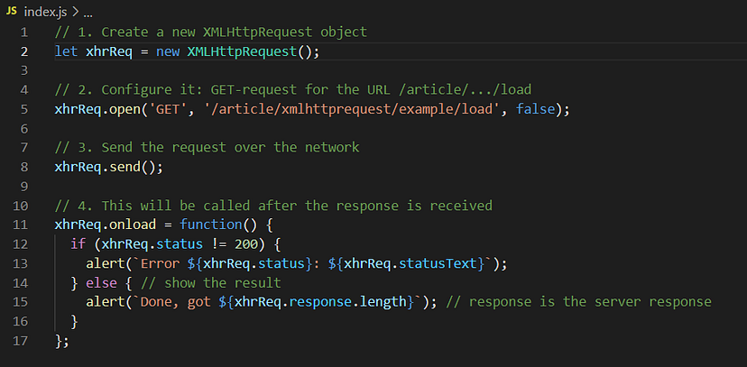
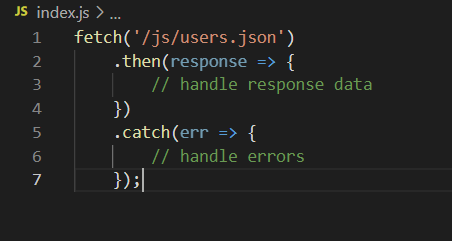
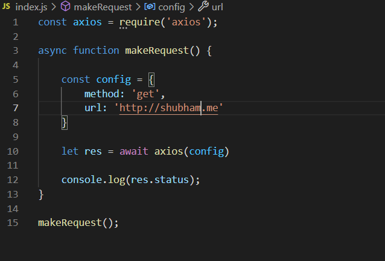

REST API
Что такое HTTP-запрос JavaScript?
HTTP-запросы в JavaScript представляют собой набор предопределенных методов, используемых для взаимодействия с данными, хранящимися на серверах.
Ответы, отправляемые сервером, обычно связаны с кодами состояния. Эти коды помогают нам понять, что сервер пытается сказать, когда получает запрос. Вот некоторые из них и что они означают:
-
100-199 обозначает информационный ответ. -
200-299 обозначает успешный запрос. -
300-399 обозначает перенаправление. -
400-499 обозначает ошибку клиента. -
500-599 обозначает ошибку сервера .
CRUD

Основные методы
GET - запрашивает представление ресурса. Запросы с использованием этого метода могут только извлекать данные.
POST - для отправки сущностей к определённому ресурсу. Часто вызывает изменение состояния или какие-то побочные эффекты на сервере.
PUT - заменяет все текущие представления ресурса данными запроса
PATCH - используется для частичного изменения ресурса.
DELETE - удаляет указанный ресурс.
Заголовки
HTTP-заголовок представляет собой строку формата «Имя-Заголовок:Значение»
Три основных метода вызова API
- XMLHttpReques;
- Fetch;
- Axios.
XMLHttpRequest
XMLHttpRequest — это объект браузера, который позволяет делать HTTP-запросы на JavaScript. В настоящее время все современные веб-браузеры имеют встроенный объект XMLHttpRequest для запроса данных с сервера
XMLHttpRequest производит две операции: синхронную и асинхронную.
Асинхронная
Синхронная
Если в методе open третий параметр async установлен в false, то запрос выполняется синхронно
Fetch
JS-метод fetch() используется для запроса к серверу и загрузки данных на веб-страницах. Fetch API — такой же простой, интуитивно понятный интерфейс, как и XMLHttpRequest, применяемый для асинхронного использования ресурсо
Fetch API очень просто использовать. Нужно просто передать URL, путь к нужному ресурсу, методу fetch():
В качестве параметра в fetch() передается маршрут к необходимому ресурсу. Он возвращает промис, который при выполнении передает ответ в then(). Метод catch() перехватывает ошибки, если запрос не удается завершить из-за сбоя в сети или по какой-либо другой причине.
Типичный запрос с помощью fetch состоит из двух операторов await:
let response = await fetch(url, options); // завершается с заголовками ответа
let result = await response.json(); // читать тело ответа в формате JSONПараметры ответа:
response.status– HTTP-код ответа,response.ok–true, если статус ответа в диапазоне 200-299.response.headers– похожий наMapобъект с HTTP-заголовками.
Методы для получения тела ответа:
response.text()– возвращает ответ как обычный текст,response.json()– декодирует ответ в формате JSON,response.formData()– возвращает ответ как объект FormData (кодировка form/multipart, см. следующую главу),response.blob()– возвращает объект как Blob (бинарные данные с типом),response.arrayBuffer()– возвращает ответ как ArrayBuffer (низкоуровневые бинарные данные),
Опции fetch, которые мы изучили на данный момент:
method– HTTP-метод,headers– объект с запрашиваемыми заголовками (не все заголовки разрешены),body– данные для отправки (тело запроса) в виде текста,FormData,BufferSource,BlobилиUrlSearchParams.
Axios
Axios — это библиотека с открытым исходным кодом, которая помогает выполнять HTTP-запросы. Она предоставляет методы .get(), .post() и т. д.
Базовый API Axios
